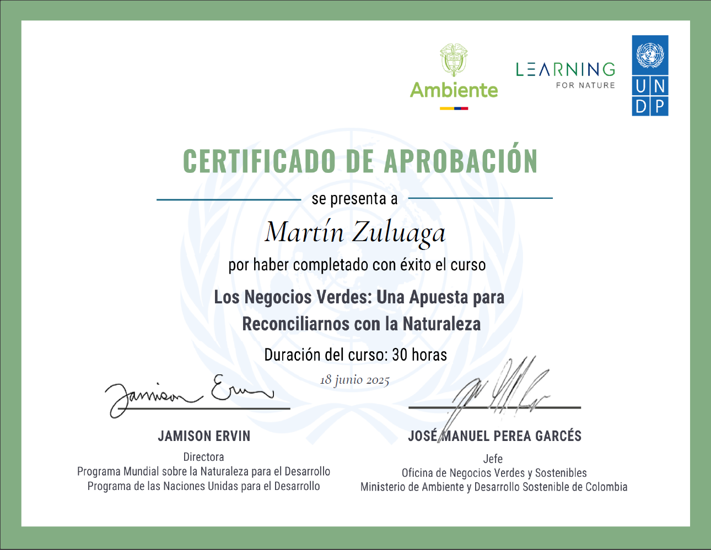

Martin's Resume

Envimental Enginneer and Web Developer
Summary about me
Environmental Engineer with solid academic background and experience in the application of Colombian environmental regulations for sustainable project management. Passionate about developing solutions that integrate sustainability, legal compliance and operational efficiency.
With updated knowledge in green business, waste management, environmental diagnostics and impact assessment. I stand out for my capacity for analysis, ethical commitment and leadership in multidisciplinary teams focused on environmental protection and responsible development.
WORK EXPERIENCE
November 2024 - May 2025 |FIBERHOME
Project Assistant
-
Managed and supervised service orders for technology infrastructure projects.
-
I coordinated technical teams in the field, ensuring compliance with operational schedules and protocols.
-
I tracked key performance indicators (KPIs), generating real-time reports for decision making.
January - August 2024 |MANUFACTURA SOSTENIBLE & INGENIEROS S.A.S.
Environmental Assistant
-
I provided technical support in the measurement and execution of energy efficiency projects in industrial sectors.
-
I participated in the design, data collection and analysis of carbon neutral projects.
-
I contributed to the implementation of sustainable strategies aligned with carbon footprint reduction goals.
June - December 2023 |RED DE SERVICIOS Y CONSULTORIAS S.A.S.
Environmental technical support
-
I participated in the review and formulation of Basic Land Use Plans (PBOTs).
-
Elaborated risk and zoning maps using drones and GIS tools.
-
I wrote technical reports to support environmental decisions before territorial entities.
-
Developed matrices of environmental aspects and impacts (Leopold Matrix).
-
Developed and updated environmental legislation matrices.
SKILLS
- English: Level B1 - Intermediate
- Excel / Google Sheets: Intermediate
- ArcGIS / QGIS: Intermediate
- AutoCAD: Basic
- Drone Management: Basic
- Python: Basic
EDUCATION
2019 - 2024 | ENVIRONMENTAL ENGINEER
Graduate - Catholic University of Manizales
CERTIFICATES
June 2025 | GREEN BUSINESSES: A COMMITMENTTO RECONNECTING WITH NATURE
Learning for Nature PNUMA (United Nations Environment Programme for the Environment)

Contact Me